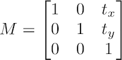
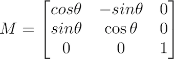
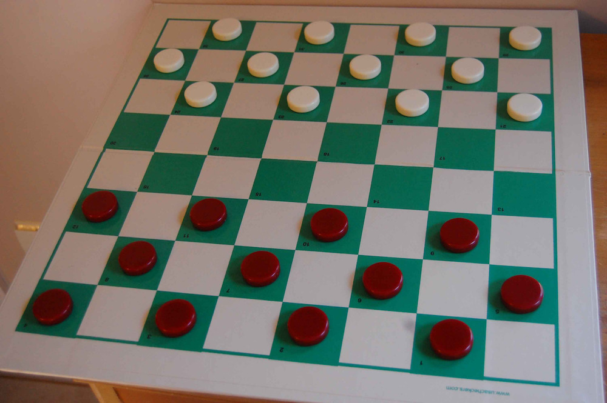
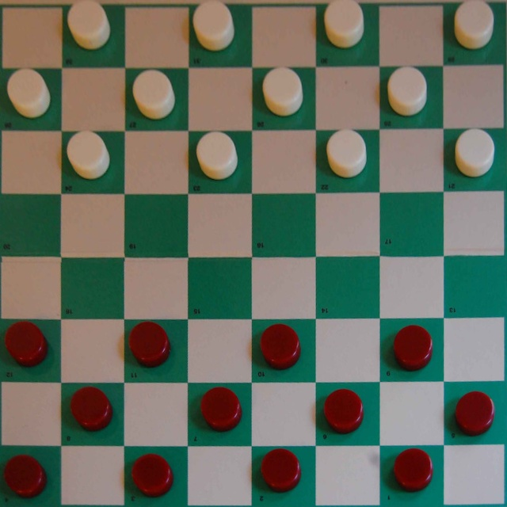
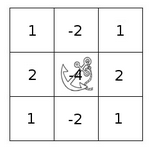
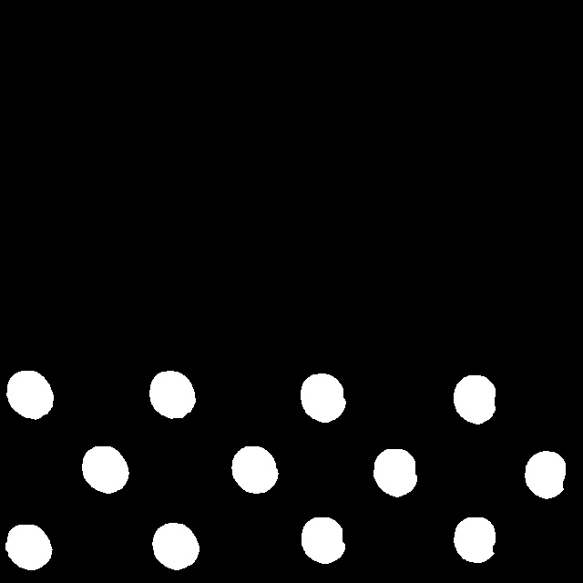

Tema 3- Procesamiento de imagen: Transformaciones¶
En este tema comenzaremos a modificar imágenes mediante transformaciones de varios tipos.
Transformaciones puntuales¶
En OpenCV se pueden realizar operaciones directas con matrices. Por ejemplo, dada una imagen src podemos multiplicar el valor de todos sus píxeles por 4 de esta forma:
1 | Mat dst = 4 * src; |
Como puedes ver, en las operaciones aritméticas podemos usar tanto números como otras matrices. Si operamos con varias matrices debemos tener en cuenta que todas ellas deben tener la misma resolución radiométrica (depth) y deben ser del mismo tipo.
Además de las operaciones aritméticas básicas (suma, resta, multiplicación y división), también podemos usar AND, OR, XOR y NOT mediante las siguientes funciones:
1 2 3 4 5 | Mat res; bitwise_and(src1, src2, dst); bitwise_or(src2, src2, dst); bitwise_xor(src1, src2, dst); bitwise_not(src1, dst); |
Por ejemplo, para invertir una imagen (transformar lo blanco a negro y lo negro a blanco) podemos usar la instrucción bitwise_not.
Ecualizar histogramas en escala de grises es muy sencillo con la función equalizeHist, que necesita recibir la imagen original y la imagen donde guardaremos el resultado:
1 2 | Mat dst; equalizeHist(src, dst); |
También podemos umbralizar una imagen en escala de grises mediante la función threshold, obteniendo como resultado una imagen binaria (también llamada máscara) que puede resaltar información relevante para una tarea determinada. La umbralización consiste en poner a 0 los píxeles que tienen un valor inferior al umbral indicado, y es la forma más básica de realizar segmentación (como veremos en detalle en el tema 5). Ejemplo de llamada a threshold:
1 | threshold(src, dst, 128, 255, CV_THRESH_BINARY); // Ponemos a 0 los píxeles cuyos valores estén por debajo de 128, y a 255 los que estén por encima. |
El último parámetro es el tipo de umbralización. En OpenCV tenemos 5 tipos de umbralización que pueden consultarse aquí, aunque el valor más usado es CV_THRESH_BINARY (umbralización binaria).
Para umbralizar imágenes en color, OpenCV ofrece la función inrange. Dada una imagen en 3 canales, esta función devuelve otra imagen de un canal que contiene en blanco aquellos píxeles que están en un determinado rango, y en negro los que quedan fuera del mismo. Por tanto, puede usarse para realizar una segmentación básica por color, tal como veremos en detalle en el tema 5.
1 | inRange(src, Scalar(0, 10, 20), Scalar(40, 40, 51), dst); |
En OpenCV existen técnicas alternativas de binarización como el umbralizado adaptativo o el método de Otsu, que también veremos en el tema de segmentación porque no se pueden considerar transformaciones puntuales al tener en cuenta los valores de intensidad de los píxeles vecinos.
Ejercicio¶
Haz un programa llamado bct.cpp que reciba 3 parámetros: El nombre de la imagen (que leeremos en escala de grises), un valor para el contraste (lo llamaremos alpha, de tipo double) y un valor para el brillo (beta, de tipo int). Ejemplo de uso:
1 | ./bct lena.jpg 1.0 0 |
El programa debe guardar en el fichero bct.jpg el resultado de ajustar la imagen de entrada con el brillo y contraste indicados. Para hacer pruebas puedes usar valores de alpha en el rango [0,2] y de beta en el rango [-50,50].
Ayuda: Podemos gestionar nosotros mismos los parámetros, pero cuando tenemos combinaciones complicadas es conveniente usar
CommandLineParser, ya que esta función lo hace por nosotros. Usa este código como base para tu programa:
1 2 3 4 5 6 7 8 9 10 11 12 13 14 15 16 17 18 19 20 21 22 23 24 25 26 27 | const string keys = "{help h usage ? | | imprimir este mensaje }" "{@image | | imagen original }" "{@alpha | | valor de contraste }" "{@beta | | valor de brillo }"; int main(int argc, char* argv[]) { CommandLineParser parser(argc, argv, keys); if (parser.has("help")) { parser.printMessage(); return 0; } if (!parser.has("@image") || !parser.has("@alpha") || !parser.has("@beta")) { parser.printMessage(); return -1; } string imageFilename= parser.get<string>("@image"); double alpha = parser.get<float>("@alpha"); double beta = parser.get<int>("@beta"); // El codigo del ejercicio debe ir a continuacion } |
Transformaciones globales¶
Una de las transformaciones globales más usadas en imagen es la transformada de Fourier. En OpenCV tenemos la función dft que calcula la transformada, aunque necesitamos hacer un preproceso para preparar la entrada a esta función, y un postproceso para calcular la magnitud y la fase a partir de su resultado. En esta asignatura no entraremos en detalles sobre cómo usar la transformada de Fourier en OpenCV, pero si quieres saber más puedes consultar este enlace.
Transformaciones geométricas¶
En OpenCV la mayoría de transformaciones geométricas se implementan creando una matriz de transformación y aplicándola a la imagen original con warpAffine.
Esta función requiere como entrada una matriz de tamaño 2x3, ya que implementa las transformaciones afines mediante matrices aumentadas. Como hemos visto en teoría, la última fila de la matriz aumentada en una transformación afín es siempre (0,0,1) por lo que no hay que indicarla (por este motivo se indica una matriz de 2x3 en lugar de 3x3).
Veamos cómo se implementan algunas transformaciones afines con esta función.
- Traslación

1 2 3 4 5 6 7 8 9 10 11 | Mat translate(Mat &src, int offsetx, int offsety) { // Creamos la matriz de traslacion (offsetx se refiere a las columnas, offsety a las filas) Mat M = (Mat_<float>(2,3) << 1, 0, offsetx, 0, 1, offsety); Mat dst; warpAffine(src, dst, M, src.size()); return dst; } Mat dst = translate(image, 0, -10); |
La función warpAffine tiene también parámetros para indicar el tipo de interpolación (flags) y el comportamiento en los bordes, tal como puede verse en la su documentación.
En general, podemos usar warpAffine para implementar cualquier transformación afín, pero existen funciones específicas para ayudar a gestionar algunas transformaciones como veremos a continuación.
- Rotación
La rotación sobre un ángulo se define del siguiente modo:

Sin embargo, OpenCV permite rotar indicando un centro de rotación ajustable para poder usar cualquier punto de referencia como el eje. Para esto se usa la función getRotationMatrix2D, que recibe como primer parámetro el eje de rotación:
1 2 3 4 5 6 7 8 9 10 11 | Mat rotate(Mat& src, double angle) { Point2f center(src.cols*0.5, src.rows*0.5); // Creamos la matriz de rotacion Mat M = getRotationMatrix2D(center, angle, 1.0); // El ultimo parametro (1.0) es la escala Mat dst; warpAffine(src, dst, M, src.size(), INTER_CUBIC); // El ultimo parametro es el metodo de interpolacion (opcional) return dst; } Mat rotated = rotate(image, 90); // Rotar 90 grados |
- Reflexión
Existe una función específica (flip) que implementa la reflexión sin necesidad de usar warpAffine.
1 2 | Mat dst(src.rows, src.cols, CV_8UC3); flip(src, dst, 1); |
El tercer parámetro de flip puede ser 0 (reflexión sobre el eje x), positivo (por ejemplo, 1 es reflexión sobre el eje y), o negativo (por ejemplo, -1 es sobre los dos ejes).
- Escalado
El escalado también se implementa mediante una función específica llamada resize, que permite indicar unas dimensiones concretas o una proporción entre la imagen origen y destino.
1 2 3 4 5 | // Especificando un tamaño determinado: resize(src, dst, Size(20,30), CV_INTER_LINEAR); // El ultimo parametro es opcional // Especificando una escala, por ejemplo 75% de la imagen original: resize(src, dst, Size(), 0.75, 0.75, CV_INTER_LINEAR); // El ultimo parametro es opcional |
- Sesgado
Para realizar un sesgado no hay ninguna función específica, por lo que podemos crear la matriz de transformación y después usar warpAffine:
1 2 3 4 5 | Mat M = (Mat_<float>(2, 3) << 1, 0, 0, 0.5, 1, 0); Mat dst; warpAffine(src, dst, M , Size(src.cols,src.rows)); |
- Proyectiva
Como hemos visto en teoría, la transformación proyectiva no es afín, por lo que no conserva el paralelismo de las líneas de la imagen original.
Para hacer una transformación proyectiva debemos indicar una matriz de 3x3 y usar la función warpPerspective, por ejemplo:
1 2 3 4 5 6 | Mat M = (Mat_<float>(3, 3) << 1, 0, 0, 0.5, 1, 0, 0.2, 0, 1); Mat dst; warpPerspective(src, dst, M, Size(src.cols,src.rows)); |
La lista completa de parámetros de esta función puede verse en este enlace.
También tenemos otra opción muy práctica para implementar una transformación de este tipo, ya que suele ser muy complicado estimar a priori los valores de la matriz para realizar una transformación concreta. Esta alternativa consiste en proporcionar dos arrays de 4 puntos (Point2f): El primero será de la imagen original, y el segundo contiene la proyección de esos puntos (dónde van a quedar finalmente) en la imagen destino, y usar getPerspectiveTransform para calcular los valores de la matriz de transformación.
1 2 3 4 5 6 7 8 9 10 11 | Point2f inputQuad[4]; Point2f outputQuad[4]; // Asignamos valores a esos puntos // ... // Obtenemos la matriz de transformación de perspectiva Mat lambda = getPerspectiveTransform(inputQuad, outputQuad); // Aplicamos la transformacion warpPerspective(src, dst, lambda, dst.size()); |
Ejercicio¶
Implementa un programa llamado perspectiva.cpp para corregir la perspectiva de una imagen damas.jpg dados estos 4 puntos de sus esquinas:
1 2 3 4 | 278, 27 // Esquina superior izquierda 910, 44 // Esquina superior derecha 27, 546 // Esquina inferior izquierda 921, 638 // Esquina inferior derecha |
Esta es la imagen de entrada:

El programa debe guardar la imagen resultante en un fichero llamado damas_corrected.jpg de tamaño 640x640 píxeles:

Transformaciones en entorno de vecindad¶
En esta sección veremos cómo implementar transformaciones en entorno de vecindad usando OpenCV, en particular convoluciones y filtros de mediana.
Filtros de convolución¶
Las convoluciones se implementan con la función filter2D.

Esta función recibe los siguientes parámetros:
src: Imagen de entradadst: Imagen resultanteddepth: Resolución radiométrica (depth) de la matrizdst. Un valor negativo indica que la resolución será la misma que tiene la imagen de entrada.kernel: El kernel a convolucionar con la imagen.anchor(opcional): La posición de anclaje del kernel (como puede verse en la figura) relativa a su origen. El punto (-1,-1) indica el centro del kernel por defecto.delta(opcional): Un valor para añadir a cada píxel durante la convolución. Por defecto, 0.borderType(opcional): El método a seguir en los bordes de la imagen para interpolación, ya que en estos puntos el filtro se sale de la imagen. Puede serBORDER_REPLICATE,BORDER_REFLECT,BORDER_REFLECT_101,BORDER_WRAP,BORDER_CONSTANT, oBORDER_DEFAULT(el valor por defecto).
Ejemplos de llamadas a la función:
1 2 | filter2D(src, dst, -1, kernel); // Esta forma es la más habitual filter2D(src, dst, -1 , kernel, Point(-1,-1)); // Ancla desplazada |
Evidentemente hay que crear antes un kernel para convolucionarlo con la imagen. Por ejemplo, podría ser el siguiente:
1 2 3 4 5 | Mat kernel = (Mat_<int>(5, 5) << -1, -1, -1, -1, -1, -1, -1, -1, -1, -1, -1, -1, 24, -1, -1, -1, -1, -1, -1, -1, -1, -1, -1, -1, -1); |
Pregunta: ¿Qué tipo de filtro acabamos de crear?
Filtro de mediana¶
El filtro de mediana se implementa de forma muy sencilla en OpenCV:
1 | medianBlur(src, dst, 5); |
El último parámetro indica el tamaño del kernel, que siempre será cuadrado (en este ejemplo, 5x5 píxeles).
Transformaciones morfológicas¶
OpenCV proporciona una serie de funciones predefinidas para realizar transformaciones morfológicas:
Erosión y dilatación¶
La sintaxis de las operaciones morfológicas básicas es sencilla:
1 2 | erode(src, dst, element); dilate(src, dst, element); |
Ambas operaciones necesitan un elemento estructurante. Al igual que en el caso de filter2D se pueden añadir opcionalmente los parámetros anchor, delta y borderType.
Para crear el elemento estructurante se usa la función getStructuringElement:
1 2 3 4 5 | int erosion_type = MORPH_ELLIPSE; // Forma del filtro int erosion_size = 6; // Tamaño del filtro (6x6) Mat element = getStructuringElement(erosion_type, Size(erosion_size, erosion_size)); |
El elemento estructurante puede tener forma de caja (MORPH_RECT), de cruz (MORPH_CROSS) o de elipse (MORPH_ELLIPSE).
Apertura, cierre y Top-Hat¶
El resto de funciones de transformación morfológica se implementan mediante la función morphologyEx:
1 | morphologyEx(src, dst, operation, element); |
Esta función se invoca con los mismos parámetros que erode o dilate mas un parámetro adicional que indica el tipo de operación:
- Apertura:
MORPH_OPEN - Cierre:
MORPH_CLOSE - Gradiente:
MORPH_GRADIENT - White Top Hat:
MORPH_TOPHAT - Black Top Hat:
MORPH_BLACKHAT
En este enlace puedes ver código de ejemplo para implementar un interfaz que permite probar estas operaciones modificando sus parámetros.
Ejercicio¶
El objetivo de este ejercicio (detectarFichas.cpp) es generar una máscara binaria que contenga sólo las fichas del juego de damas.
Fichas rojas
Veamos un ejemplo de detección de las fichas rojas:

El programa a implementar debe cargar directamente la imagen resultante del ejercicio anterior (damas_corrected.jpg) y a continuación seguir los siguientes pasos:
- Realizar una umbralización quedándonos sólo con los píxeles que tengan un color dentro de un rango BGR entre (0,0,50) y (40,30,255). Podemos visualizar el resultado con
imshow. Deberíamos tener los píxeles de las fichas rojas resaltados, aunque la detección es todavía imperfecta y existen huecos. - Crear un elemento estructurante circular de tamaño 10x10 píxeles y aplicar un operador de cierre para perfilar mejor los contornos de las fichas y eliminar estos huecos.
- Guardar la imagen resultante en el fichero
rojas.jpg. Debería dar el mismo resultado que se muestra en la imagen anterior.
Fichas blancas
- Ahora intenta resaltar sólo las fichas blancas lo mejor que puedas, guardando el resultado en el fichero
blancas.jpg. Puedes usar filtrado de color (en cualquier espacio, como HSV) y realizar transformaciones morfológicas o de cualquier otro tipo. Probablemente no te salga demasiado bien, ¿por qué crees que es mucho más complicado?